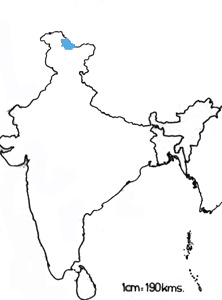

|
Digitized
Inventory of Animal Resources: Mammalia |
Taxonomic
Details
----- Scientific Name
----- Classification
----- Synonyms
----- Common Names
Other
Biological Details
----- Habit and
Habitat
----- Distribution
---------- Extent of
Occurrence
---------- Area of
occurrence
---------- Altitude
---------- Population
-----
Conservation Status
-----
Diagnostic
Features
-----
Breeding system
Miscellaneous
Information
Literature
Scientific Name : Crocidura pergrisea, Miller
Family :
Classification:
Order:
Insectivora,
Family:
Soricidae
Synonyms:
None
Common Names: Pale
gray shrew, Regional
Names: Not
Available
Threat
: Habitat
Fragmentation, Human Interference, Loss of Habitat, Insurgency/terrorism/war/
and Limited Distribution.; Effect of
threats on population (Perceived or inferred): Declining
Trade: Not Known; Parts in trade: Not Known; Effect of trade on population (Perceived or inferred): Not declining
Terrestrial.
Semiarid and rocky areas at high altitude. Drier parts of mountainous and hilly
tracts. The species appears to be living in most hostile environment at high
altitudes. It matures very quickly and has a short period of life. It is able to
attack and feed on soil borne crustaceans, worms, insect larvae, nestlings and
even small mammals.
Habitat
Structure: Highland
habitats.
Distribution: Jammu and Kashmir within Indian limits
Extent of Occurrence 2001-5000
sq.kms.
Locations:
No.
of Locations: Three in
Kashmir; Type: Isolated
Area of occurrence: 501-2000 sq.kms.
Altitude:
2900-3200 Mts.
Population:
Population:
Global Population: Not Known; No.
of
mature individuals in all the populations: Not known
Captive Population: None
Life span:
(Wild): Short Lived; (Captivity): Not Known
Conservation status: CITES APPENDIX: Not Listed; Indian Wildlife (Protection) Act (1972) (As amended up to 2002): Schedule Not Listed; Part ; Indian Red Data Book (IUCN, 1994): Not Listed; IUCN (1998) (Proposed): Endangered (National); IUCN (2002) (Proposed): Vulnerable (Global) based on Version 2.3 1994 (IUCN,2003);
Endemism: Non-Endemic species.Endangered
Crocidura pergresea is one of the larger Crocidura species and is strikingly pale gray on dorsal side while white or creamy white on ventral side. The tail is comparatively longer (70% + of Head and Body Length) The tail possesses a few scattered long and erect hairs. There are three upper unicuspid teeth. Any medium sized shrew of pale gray colouration with lighter underparts and 28 teeth in upper jaw collected from highland regions of Kashmir should be assigned to Crocidura pergrisea.
Measurements: (In mm): Average Head and Body Length: 72,Tail
Length: 53, Hind feet: 13, Ear Length: 9, Greatest skull Length: 19-20, Upper
tooth row:8.4-8.6
Weight: Not Available
Intraspecific variations: No variation has been reported in the
Indian populations (Hassinger, 1973 as cited in Corbet and Hill, 1992)
Museum Records: Locality: Baltistan; Year: 1912; Collector: Dr.
W.L.
Abbot; Number of examples studied or
collected: Type specimen; Name
of Museum: Not Available
Sighting Records: Type
of Sighting: None; Field
Notes: This shrew appears to confine to the inner and dryer Himalayan
ranges. It is uncommon judging from the collected material (Roberts, 1997)
Taxon related studies recommended: In-Situ Survey, Field
Survey, Monitoring and Taxonomic Studies
Remarks: Roberts (Per. Com.) proposed "Presumed
Endangered" Status because of limited distribution and unfavorable habitat. Chakraborty (1983) and Roberts, (1997) carried out some studies on
distribution and ecology of this species.

Corbet
G. B. and Hill, J. E. . 1992 The
Mammals of Indomalayan Region. 488pp. Publisher: Oxford
University Press, U. K.
Ellerman, J. R. and Morrison-Scott, T. C. S. 1951 Checklist
of Palaearctic and Indian Mammals 810pp. Publisher: British
Museum (Natural History) London
Molur, S. ;Nameer, P. O. and Walker, S. 1998 Report of the Workshop “ Conservation Assessment and Management plan
for Mammals of India.” (BCPP- Endangered Species Project) 176pp. Publisher: ZooOutreach
Organization, Conservation Breeding Specialist Group India, Coimbatore, India.
Roberts. T. J. 1997 The Mammals
of Pakistan. 525pp. Publisher: Oxford University Press,
London.